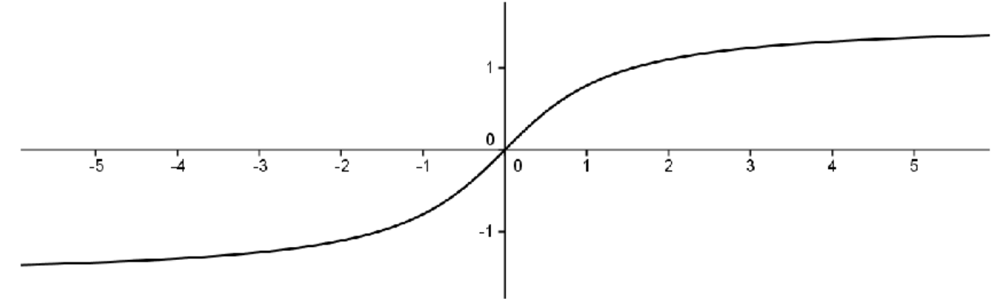

Section 9.4 The Supremum and the Extreme Value Theorem
Theorem 9.3.1 says that a continuous function on a closed, bounded interval must be bounded. Boundedness, in and of itself, does not ensure the existence of a maximum or minimum. We must also have a closed, bounded interval. To illustrate this, consider the continuous function
\(f(x)=\)tan
\(^{-1}x\) defined on the (unbounded) interval
\(\left(-\infty,\infty\right)\text{.}\)

This function is bounded between
\(-\frac{\pi}{2}\)and
\(\frac{\pi}{2}\text{,}\) but it does not attain a maximum or minimum as the lines
\(y=\pm\frac{\pi}{2}\) are horizontal asymptotes. Notice that if we restricted the domain to a closed, bounded interval then it would attain its extreme values on that interval (as guaranteed by the
EVT).
To find a maximum we need to find the smallest possible upper bound for the range of the function. This prompts the following definitions.
Definition 9.4.1.
Let
\(S\subseteq\mathbb{R}\) and let
\(b\) be a real number. We say that
\(b\) is an upper bound of
\(S\) provided
\(b\geq x\) for all
\(x\in S\text{.}\)
For example, if
\(S=(0,1)\text{,}\) then any
\(b\) with
\(b\geq 1\) would be an upper bound of
\(S\text{.}\) Furthermore, the fact that
\(b\) is not an element of the set
\(S\) is immaterial. Indeed, if
\(T=[\,0,1]\text{,}\) then any
\(b\) with
\(b\geq 1\) would still be an upper bound of
\(T\text{.}\) Notice that, in general, if a set has an upper bound, then it has infinitely many since any number larger than that upper bound would also be an upper bound. However, there is something special about the smallest upper bound.
Definition 9.4.2. Least Upper Bound Property (LUBP).
Let
\(S\subseteq\mathbb{R}\) and let
\(b\) be a real number. We say that
\(b\) is the
least upper bound of
\(S\) provided
-
\(b\geq x\) for all
\(x\in S\text{.}\) (
\(b\) is an upper bound of
\(S\))
-
If
\(c\geq x\) for all
\(x\in S\text{,}\) then
\(c\geq b\text{.}\) (Any upper bound of
\(S\) is at least as big as
\(b\text{.}\))
In this case, we also say that \(b\) is the supremum of \(S\) and we write
\begin{equation*}
b=\sup S\text{.}
\end{equation*}
Notice that the definition really says that \(b\) is the smallest upper bound of \(S\text{.}\) Also notice that the second condition can be replaced by its contrapositive so we can say that \(b=\sup S\) if and only if
-
\(\displaystyle b\,\geq\,x\text{ for all } x\,\in S\)
-
If
\(c\,\lt \,b\) then there exists
\(x\,\in S\) such that
\(c\,\lt \,x\text{.}\)
The second condition says that if a number
\(c\) is less than
\(b\text{,}\) then it can’t be an upper bound, so that
\(b\) really is the smallest upper bound.
Also notice that the supremum of the set may or may not be in the set itself. This is illustrated by the examples above as in both cases,
\(1=\sup(0,1)\) and
\(1=\sup [0,1]\text{.}\) Obviously, a set which is not bounded above such as
\(\mathbb{N}=\{1,\,2,\,3,\,\ldots\}\) cannot have a supremum. However, for non-empty sets which are bounded above, we have the following.
Theorem 9.4.3. The Least Upper Bound Property (LUBP).
Let
\(S\) be a non–empty subset of
\(\mathbb{R}\) which is bounded above. Then
\(S\) has a supremum.
Sketch of Proof.
Since \(S\neq\emptyset\text{,}\) then there exists \(s\in S\text{.}\) Since \(S\) is bounded above then it has an upper bound, say \(b\text{.}\) We will set ourselves up to use the Nested Interval Property. With this in mind, let \(x_1=s\) and \(y_1=b\) and notice that \(\exists\) \(x\in S\) such that \(x\geq x_1\) (namely, \(x_1\) itself) and \(\forall\,x\in S\text{,}\) \(y_1\geq x\text{.}\) You probably guessed what’s coming next: let \(m_1\) be the midpoint of \([\,x_1,y_1]\text{.}\) Notice that either \(m_1\geq x,\,\forall\,x\in S\) or \(\exists\) \(x\in S\) such that \(x\geq m_1\text{.}\) In the former case, we relabel, letting \(x_2=x_1\) and \(y_2=m_1\text{.}\) In the latter case, we let \(x_2=m_1\) and \(y_2=y_1\text{.}\) In either case, we end up with \(x_1\leq x_2\leq y_2\leq y_1\text{,}\) \(y_2-x_2=\frac{1}{2}\left(y_1-x_1\right)\text{,}\) and \(\exists\) \(x\in S\) such that \(x\geq x_2\) and \(\forall\,x\in S\text{,}\) \(y_2\geq x\text{.}\) If we continue this process, we end up with two sequences, \(\left(x_n\right)\)and \(\left(y_n\right)\text{,}\) satisfying the following conditions:
-
\(\displaystyle x_1\leq x_2\leq x_3\leq\ldots\)
-
\(\displaystyle y_1\geq y_2\geq y_3\geq\ldots\)
-
\(\forall\) \(n\text{,}\) \(x_n\leq y_n\)
-
\(\displaystyle \lim_{n\rightarrow\infty}\left(y_n-x_n\right)=\lim_{n\rightarrow\infty} \frac{1}{2^{n-1}}\left(y_1-x_1\right)=0\)
-
\(\forall\) \(n,\exists\) \(x\in S\) such that
\(x\geq x_n\) and
\(\forall\,x\in S\text{,}\) \(y_n\geq x\text{,}\)
By properties 1–4 and the
NIP there exists
\(c\) such that
\(x_n\leq c\leq y_n,\,\forall\,n\text{.}\) We will leave it to you to use property 5 to show that
\(c=\sup S\text{.}\)
Problem 9.4.4.
Complete the above ideas to provide a formal proof of
Theorem 9.4.3.
Notice that we really used the fact that
\(S\) was non-empty and bounded above in the proof of
Theorem 9.4.3. This makes sense, since a set which is not bounded above cannot possibly have a least upper bound. In fact, any real number is an upper bound of the empty set so that the empty set would not have a least upper bound.
Corollary 9.4.5.
Let
\((x_n)\) be a bounded, increasing sequence of real numbers. That is,
\(x_1\leq x_2\leq x_3\leq\cdots\text{.}\) Then
\((x_n)\) converges to some real number
\(c\text{.}\)
Problem 9.4.6.
Hint.
Let
\(c=\sup\{x_n|\,n=1,2,3,\ldots\}\text{.}\) To show that
\(\limit{n}{\infty}{x_n}=c\text{,}\) let
\(\eps >0.\)Note that
\(c-\eps \) is not an upper bound. You take it from here!
Problem 9.4.7.
Consider the following curious expression
\begin{equation*}
\sqrt{2+\sqrt{2+\sqrt{2+\sqrt{...}}}}\text{.}
\end{equation*}
We will use
Corollary 9.4.5 to show that this actually converges to some real number. After we know it converges we can actually compute what it is. Of course to do so, we need to define things a bit more precisely. With this in mind consider the following sequence
\(\left(x_n\right)\) defined as follows:
\begin{equation*}
x_1=\sqrt{2}
\end{equation*}
\begin{equation*}
x_{n+1}=\sqrt{2+x_n}\text{.}
\end{equation*}
(a)
Use induction to show that
\(x_n\lt 2\) for
\(n=1,\,2,\,3,\,\ldots\text{.}\)
(b)
Use the result from part (a) to show that
\(x_n\lt x_{n+1}\) for
\(n=1,\,2,\,3,\,\ldots\) .
(c)
From
Corollary 9.4.5, we have that
\(\left(x_n\right)\) must converge to some number
\(c\text{.}\) Use the fact that
\(\left(x_{n+1}\right)\) must converge to
\(c\) as well to compute what
\(c\) must be.
Problem 9.4.8.
Let
\(S\subseteq\RR\) and let
\(T=\{-x|\,x\in S\}\text{.}\)
(a)
Mimic the definitions of an upper bound of a set and the least upper bound (supremum) of a set to give definitions for a lower bound of a set and the greatest lower bound (infimum) of a set.
Note: The infimum of a set
\(S\) is denoted by
\(\inf S\text{.}\)
(b)
Prove that
\(b\) is an upper bound of
\(S\) if and only if
\(-b\) is a lower bound of
\(T\text{.}\)
(c)
Prove that
\(b=\sup S\) if and only if
\(-b=\inf T\text{.}\)
(d)
Use parts (a) and (b) to show that the real number system satisfies the
Greatest Lower Bound Property: Any non–empty subset of real numbers which is bounded below has an infimum.
Problem 9.4.9.
Find the least upper bound (supremum) and greatest lower bound (infimum) of the following sets of real numbers, if they exist. (If one does not exist then say so.)
(a)
\(S=\left\{\frac{1}{n}\,|\,n=1,2,3,\ldots\right\}\)
(b)
\(T=\left\{r\,|\,r\right.\) is rational and
\(\left.r^2\lt 2\right\}\)
(c)
\((-\infty,0)\cup(1,\infty)\)
(d)
\(R=\left\{\frac{(-1)^n}{n}\,|\,n=1,2,3,\ldots\right\}\)
(e)
(f)
The empty set
\(\emptyset\)
We now have all the tools we need to tackle the Extreme Value Theorem.
Theorem 9.4.10. Extreme Value Theorem (EVT).
Suppose
\(f\) is continuous on
\([a,b]\text{.}\) Then there exists
\(c,d\in[a,b]\) such that
\(f(d)\leq f(x)\leq f(c)\text{,}\) for all
\(x\in[a,b]\text{.}\)
Sketch of Proof.
We will first show that
\(f\) attains its maximum. To this end, recall that
Theorem 9.3.1 tells us that
\(f[\,a,b]=\{f(x)|\,x\in[\,a,b]\}\) is a bounded set. By the
LUBP,
\(f[a,b]\) must have a least upper bound which we will label
\(s\text{,}\) so that
\(s=\sup f[a,b]\text{.}\) This says that
\(s\geq f(x)\text{,}\)for all
\(x\in[a,b]\text{.}\) All we need to do now is find a
\(c\in[\,a,b]\) with
\(f(c)=s\text{.}\) With this in mind, notice that since
\(s=\sup f[\,a,b]\text{,}\) then for any positive integer
\(n\text{,}\) \(s-\frac{1}{n}\) is not an upper bound of
\(f[\,a,b]\text{.}\) Thus there exists
\(x_n\in[\,a,b]\) with
\(\,s-\frac{1}{n}\lt f(x_n)\leq s\text{.}\) Now, by the
Bolzano–Weierstrass Theorem,
\(\left(x_n\right)\) has a convergent subsequence
\(\,\left(x_{n_k}\right)\) converging to some
\(c\in[\,a,b]\text{.}\) Using the continuity of
\(f\) at
\(c\text{,}\) you should be able to show that
\(f(c)=s\text{.}\) To find the minimum of
\(f\text{,}\) find the maximum of
\(-f\text{.}\)
Problem 9.4.11.
Formalize the above ideas into a proof of the
EVT.
Notice that we used the
NIP to prove both the
Bolzano–Weierstrass Theorem and the
LUBP. This is really unavoidable, as it turns out that all of those statements are equivalent in the sense that any one of them can be taken as the completeness axiom for the real number system and the others proved as theorems. This is not uncommon in mathematics, as people tend to gravitate toward ideas that suit the particular problem they are working on. In this case, people realized at some point that they needed some sort of completeness property for the real number system to prove various theorems. Each individual’s formulation of completeness fit in with his understanding of the problem at hand. Only in hindsight do we see that they were really talking about the same concept: the completeness of the real number system. In point of fact, most modern textbooks use the
LUBP as the axiom of completeness and prove all other formulations as theorems. We will finish this section by showing that either the
Bolzano–Weierstrass Theorem or the
LUBP can be used to prove the
NIP. This says that they are all equivalent and that any one of them could be taken as the completeness axiom.
Problem 9.4.12.
Use the
Bolzano–Weierstrass Theorem to prove the
NIP. That is, assume that the Bolzano–Weierstrass Theorem holds and suppose we have two sequences of real numbers,
\(\left(x_n\right)\) and
\(\left(y_n\right)\text{,}\) satisfying:
-
\(\displaystyle x_1\le x_2 \le x_3 \le \ldots\)
-
\(\displaystyle y_1\ge y_2 \ge y_3 \ge \ldots\)
-
\(\displaystyle \forall\ n,\ x_n\le y_n\)
-
\(\displaystyle\lim_{n\rightarrow\infty}\left(y_n-x_n\right) = 0\text{.}\)
Prove that there is a unique real number
\(c\) such that
\(x_n\le c\le y_n\text{,}\) for all
\(n\text{.}\)
Problem 9.4.13.
Find a bounded sequence of rational numbers such that no subsequence of it converges to a rational number.
Problem 9.4.14.
Use the
Least Upper Bound Property to prove the
Nested Interval Property. That is, assume that every non-empty subset of the real numbers which is bounded above has a least upper bound; and suppose that we have two sequences of real numbers
\(\left(x_n\right)\) and
\(\left(y_n\right)\text{,}\) satisfying:
-
\(\displaystyle x_1\le x_2 \le x_3 \le \ldots\)
-
\(\displaystyle y_1\ge y_2 \ge y_3 \ge \ldots\)
-
\(\displaystyle \forall\ n, x_n\le y_n\)
-
\(\limit{n}{\infty}{\left(y_n-x_n\right)} = 0\text{.}\)
Prove that there is a unique real number
\(c\) such that
\(x_n\le c\le y_n\text{,}\) for all n.
Problem 9.4.15.
Since the
LUBP is equivalent to the
NIP it does not hold for the rational number system. Demonstrate this by finding a non–empty set of rational numbers which is bounded above, but whose supremum is an irrational number.
We now have the machinery in place to prove the
Archimedean Property of the real number system as we promised we’d to back in
Chapter 2. We mentioned in
Chapter 2, that until the invention of Calculus this was taken to be intuitively obvious but we can now prove it as a formal theorem. The proof depends on the completeness of the real number system.
Theorem 9.4.16. Archimedean Property of \(\RR\).
Given any positive real numbers
\(a\) and
\(b\text{,}\) there exists a positive integer
\(n\text{,}\) such that
\(na>b\text{.}\)
Problem 9.4.17.
Hint.
Assume that there are positive real numbers
\(a\) and
\(b\text{,}\) such that
\(na\le b\) \(\forall\ n\in \NN\text{.}\) Then
\(\NN\) would be bounded above by
\(b/a\text{.}\) Let
\(s=\sup(\NN)\) and consider
\(s-1\text{.}\)
Problem 9.4.18.
Does
\(\QQ\) satisfy the
Archimedean Property and what does this have to do with the question of taking the Archimedean Property as an axiom of completeness?